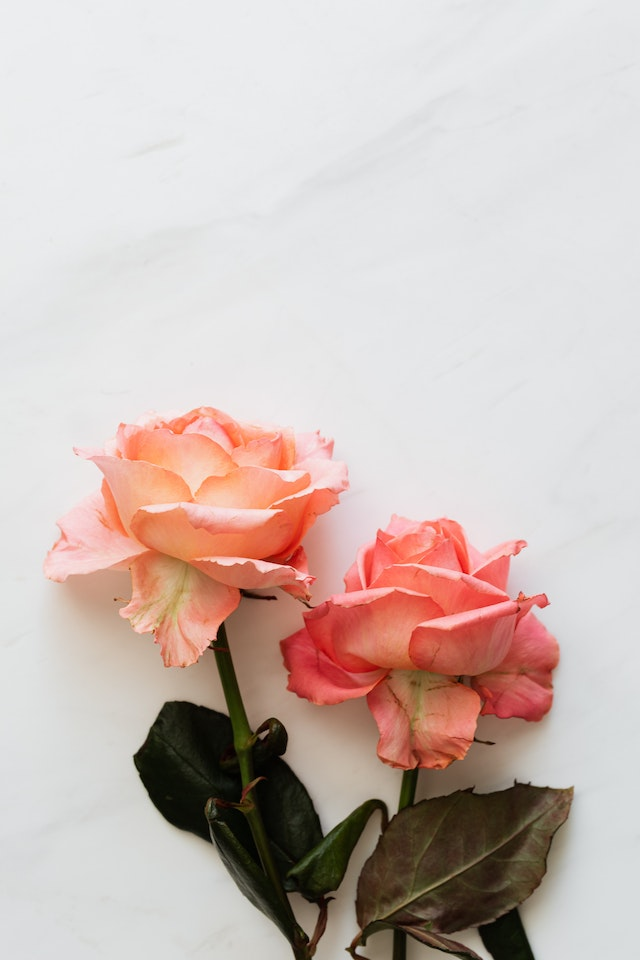
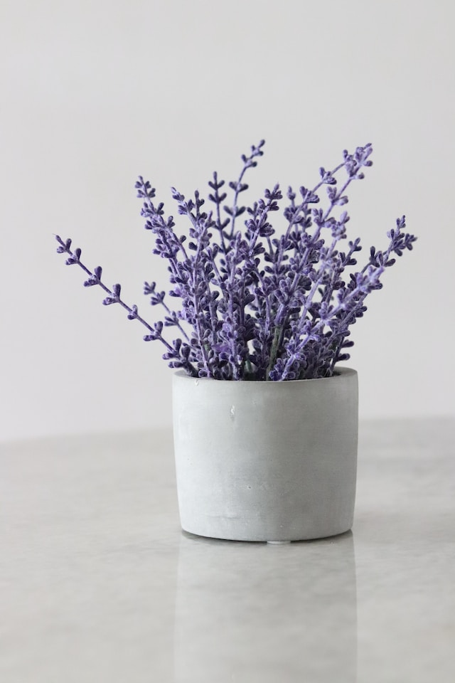
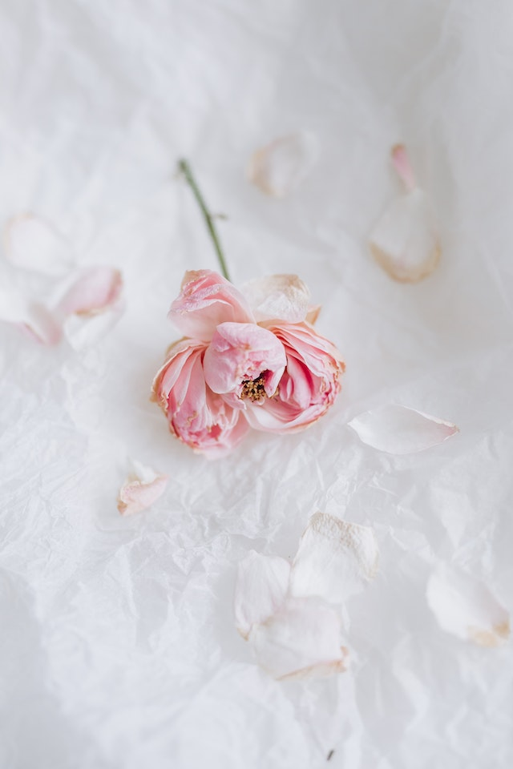
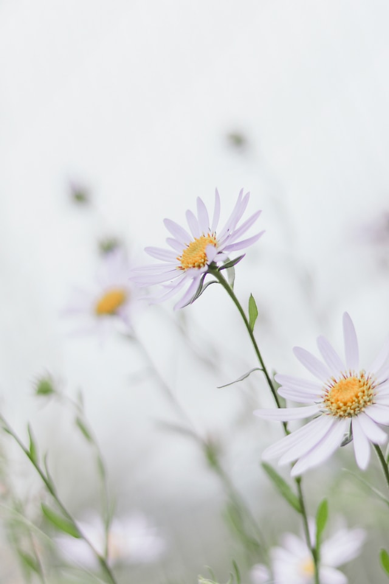
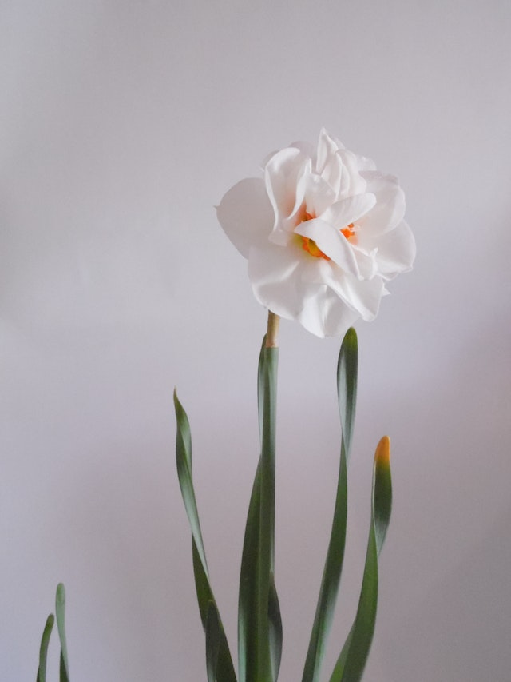
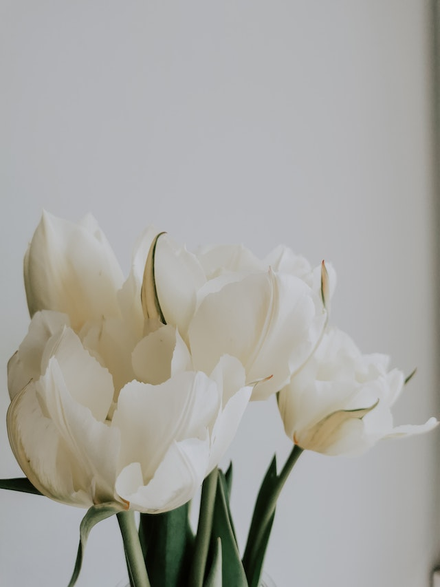

Роза
Есть легенда о Роданте, которая страдала от навязчивого внимания к её красоте. Роданта взмолилась о защите в храме Дианы, и та превратила её в розу, а людей сломавших ворота храма - в шипы на стебле.

Лаванда
Одна из легенд о лаванде гласит, что изгнанным из рая Адаму и Еве Бог подарил полезные травы, чтобы облегчить их тяжесть земной жизни. Среди них была и лаванда, которая позволяла душе усладиться.

Пион
Существует поверье, что когда-то пион решил соревноваться по красоте с розой. На что богиня флора обозвала его гордым и глупым. Богиня заколдовала цветок, обрекая его на вечное одиночество.

Ромашка
В стародавние времена ромашки служили зонтиками для маленьких степных гномиков. Как начнётся дождь, так гномик и спрячется под ромашкой, дождик стекает по её лепесткам, а гномик сухим остаётся.

Нарцисс
У Кефисса и Лириоэссы был сын, юноша, который отверг любовь Эхо. За это он был наказан: увидев в воде своё отражение, влюбился в него. От неутолимой страсти он умер, а в память остался благоухающий цветок.

Тюльпан
Легенда гласит, что именно в бутоне тюльпана было заключено счастье. И только по этой причине турецкие султаны, желая заполучить счастье, выращивали в своих садах ковры из живых цветов.